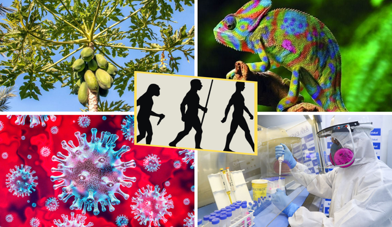
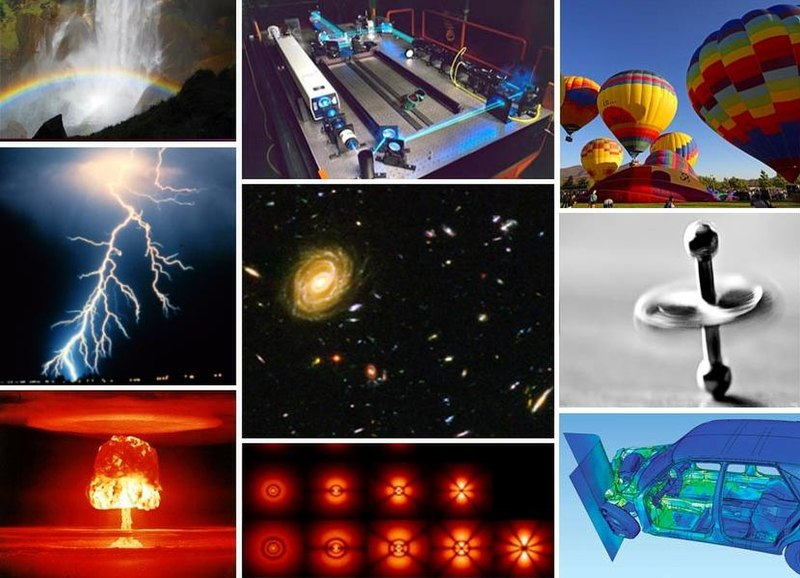

La naturaleza es todo aquello que se ha formado de manera espontanea en el planeta Tierra. Forman parte de ella todos los organismos vivíos que habitan el planeta, en su diversidad y magnificencia es un tesoro invaluable que sustenta la vida en nuestro planeta, la naturaleza es una obra maestra en constante evolución. Mostrar más..
La naturaleza se refiere al conjunto de fenómenos y seres que existen de manera espontánea en el universo sin intervención directa del ser humano incluye elementos como los paisajes, los animales, las plantas, el clima, cuerpos celestes y todos los procesos que ocurren en el entorno natural, sin tomar en consideración ni los artefactos y los objetos de fabricación humana en el en medio ambiente. Mostrar más...
Se refiere al conjunto de elementos y seres vivos que componen nuestro entorno físico y biológico. Incluye desde los fenómenos atmosféricos hasta los ecosistemas más complejos.
La naturaleza es un sistema interconectado en el que los seres vivos y su entorno interactúan en equilibrio.
| CIENCIA | ESTUDIA | |
|---|---|---|
| Biología | Composición de los seres vivos desde el nivel molecular. Estudia la vida desde diferentes puntos de vista: La estudia desde un enfoque ecológico, sistemático, evolutivo, molecular y genético, mediante los cuales puede establecer diferencias y relaciones entre los distintos tipos de formas de vida. |  |
| Botánica | Estudia las plantas bajo todos sus aspectos, incluyendo la descripción, clasificación, distribución, identificación, estudio de la reproducción, fisiología, morfología, relaciones recíprocas, relaciones con los otros seres vivos y efectos provocados sobre el medio en el que se encuentran. | |
| Física | Estudia los componentes y fenómenos más fundamentales del universo. |  |
| Química | Estudia la composición estructurada y propiedades de la materia ya sea forma de elementos, espacios, compuestos. Estudia las sustancias y sus interacciones, en los que se producen cambios tanto en la materia como en la energía | |
| Astronomía | Estudia los cuerpos celestes del universo, incluidos las estrellas, los planetas, sus satélites naturales, los asteroides, cometas y meteoroides, la materia interestelar, las nebulosas, la materia oscura, las galaxias y demás; por lo que también estudia los fenómenos astronómicos ligados a ellos. |  |